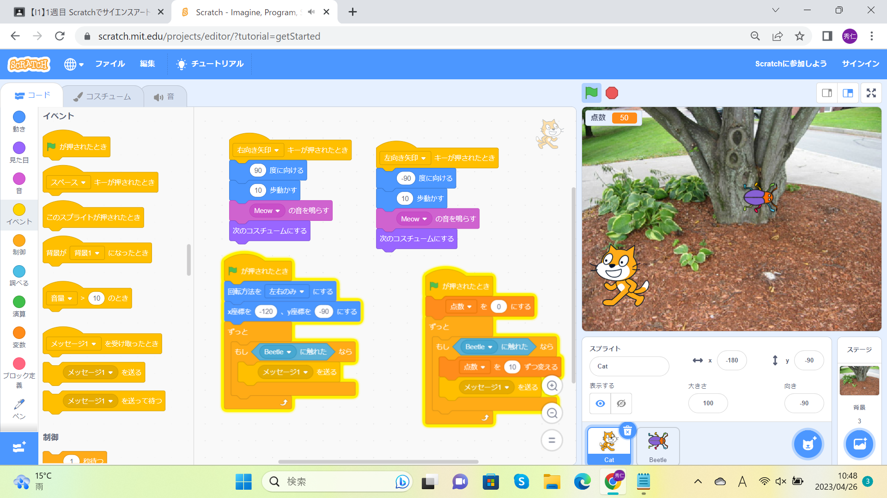

1-2 ゲーム

1.内容
scratchを使ってゲームをつくる
2.感想
ゲームのプログラムはとても難しそうだったけど案外簡単にプログラムを組み立てることができた。落ちてくる場所をランダムにしたり落ちてくるスプライトにネゴが触れると点数が入って消えるプログラムはとてもすごいなぁと思った。
スコアも出すことができるのでｓｃｒａｔｃｈ一つでいろんなことができる。これもとても簡単にできて僕は説明の後逆に触れるとスコアが減点されるようなスプライトを追加した。このプログラムも触れたらスコアがプラスになるプログラム簡単に書き換えるだけなのでとてもタンタンで楽しく製作することができた。